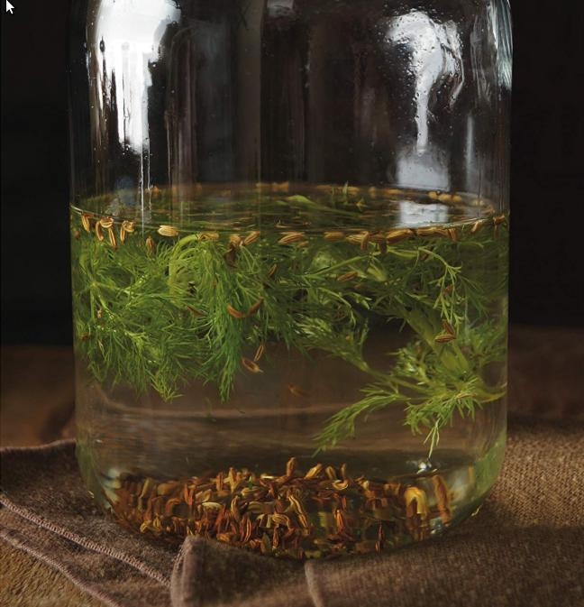

Water of Life Recipe

Today we are going to learn how to make a nordic classic! The so called Water of Life is considered to be a cure-all bevearge by many Nords,
this potent beverage is reputed to bring the ill back up to full health. Everyone seems to have their own family recipe, but I managed to wheedle this one out of a farmer in Fallcreath.
Ingredients
- 2 teaspoons of fennel seeds
- 2 teaspoons caraway seeds
- 1 tablespoon juniper berries
- 1 sprig fresh dill
- 4 cups vodka
Method
- In a small sauté pan or skillet over medium heat, toast the fennel and caraway seeds for several minutes until they are lightly browned and smell fragrant.
Add the seedsand the remaining ingredients to a large jug and seal the top
- Let steep for 2 to 3 days, until it turns a light golden color and has as strong a flavor as you like. Serve in small glasses.
It can be sipped as a digestive or knocked back for more medicinal approach.
Home